<!DOCTYPE html
  PUBLIC "-//W3C//DTD HTML 4.01 Transitional//EN">

<html><html><body><div class="banner"><a href="../../../index.html"></a></div></body></html><head>
<meta content="text/html; charset=utf-8" http-equiv="Content-Type"/>
<!--
This HTML was auto-generated from MATLAB code.
To make changes, update the MATLAB code and republish this document.
      --><title>Charney-DeVore Model</title><meta content="MATLAB 9.14" name="generator"/><link href="http://purl.org/dc/elements/1.1/" rel="schema.DC"/><meta content="2023-08-31" name="DC.date"/><meta content="Charney_DeVore_model.m" name="DC.source"/><style type="text/css">
html,body,div,span,applet,object,iframe,h1,h2,h3,h4,h5,h6,p,blockquote,pre,a,abbr,acronym,address,big,cite,code,del,dfn,em,font,img,ins,kbd,q,s,samp,small,strike,strong,tt,var,b,u,i,center,dl,dt,dd,ol,ul,li,fieldset,form,label,legend,table,caption,tbody,tfoot,thead,tr,th,td{margin:0;padding:0;border:0;outline:0;font-size:100%;vertical-align:baseline;background:transparent}body{line-height:1}ol,ul{list-style:none}blockquote,q{quotes:none}blockquote:before,blockquote:after,q:before,q:after{content:'';content:none}:focus{outine:0}ins{text-decoration:none}del{text-decoration:line-through}table{border-collapse:collapse;border-spacing:0}

html { min-height:100%; margin-bottom:1px; }
html body { height:100%; margin:0px; font-family:Arial, Helvetica, sans-serif; font-size:10px; color:#000; line-height:140%; background:#fff none; overflow-y:scroll; }
html body td { vertical-align:top; text-align:left; }

h1 { padding:0px; margin:0px 0px 25px; font-family:Arial, Helvetica, sans-serif; font-size:1.5em; color:#d55000; line-height:100%; font-weight:normal; }
h2 { padding:0px; margin:0px 0px 8px; font-family:Arial, Helvetica, sans-serif; font-size:1.2em; color:#000; font-weight:bold; line-height:140%; border-bottom:1px solid #d6d4d4; display:block; }
h3 { padding:0px; margin:0px 0px 5px; font-family:Arial, Helvetica, sans-serif; font-size:1.1em; color:#000; font-weight:bold; line-height:140%; }

a { color:#005fce; text-decoration:none; }
a:hover { color:#005fce; text-decoration:underline; }
a:visited { color:#004aa0; text-decoration:none; }

p { padding:0px; margin:0px 0px 20px; }
img { padding:0px; margin:0px 0px 20px; border:none; }
p img, pre img, tt img, li img, h1 img, h2 img { margin-bottom:0px; }

ul { padding:0px; margin:0px 0px 20px 23px; list-style:square; }
ul li { padding:0px; margin:0px 0px 7px 0px; }
ul li ul { padding:5px 0px 0px; margin:0px 0px 7px 23px; }
ul li ol li { list-style:decimal; }
ol { padding:0px; margin:0px 0px 20px 0px; list-style:decimal; }
ol li { padding:0px; margin:0px 0px 7px 23px; list-style-type:decimal; }
ol li ol { padding:5px 0px 0px; margin:0px 0px 7px 0px; }
ol li ol li { list-style-type:lower-alpha; }
ol li ul { padding-top:7px; }
ol li ul li { list-style:square; }

.content { font-size:1.2em; line-height:140%; padding: 20px; }

pre, code { font-size:12px; }
tt { font-size: 1.2em; }
pre { margin:0px 0px 20px; }
pre.codeinput { padding:10px; border:1px solid #d3d3d3; background:#f7f7f7; }
pre.codeoutput { padding:10px 11px; margin:0px 0px 20px; color:#4c4c4c; }
pre.error { color:red; }

@media print { pre.codeinput, pre.codeoutput { word-wrap:break-word; width:100%; } }

span.keyword { color:#0000FF }
span.comment { color:#228B22 }
span.string { color:#A020F0 }
span.untermstring { color:#B20000 }
span.syscmd { color:#B28C00 }
span.typesection { color:#A0522D }

.footer { width:auto; padding:10px 0px; margin:25px 0px 0px; border-top:1px dotted #878787; font-size:0.8em; line-height:140%; font-style:italic; color:#878787; text-align:left; float:none; }
.footer p { margin:0px; }
.footer a { color:#878787; }
.footer a:hover { color:#878787; text-decoration:underline; }
.footer a:visited { color:#878787; }

table th { padding:7px 5px; text-align:left; vertical-align:middle; border: 1px solid #d6d4d4; font-weight:bold; }
table td { padding:7px 5px; text-align:left; vertical-align:top; border:1px solid #d6d4d4; }


  </style></head><body><div class="content"><h1>Charney-DeVore Model</h1><!--introduction--><!--/introduction--><h2>Contents</h2><div><ul><li><a href="#2">Continuation of fixed point</a></li><li><a href="#4">Shift origin to a rank-1 saddle and calcualte the SSM around the saddle</a></li><li><a href="#6">Shift origin to a rank-2 saddle and calcualte the SSM around the saddle</a></li></ul></div><p>Consider Charney–DeVore model [1,2]</p><p>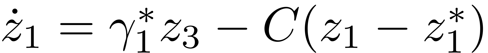</p><p>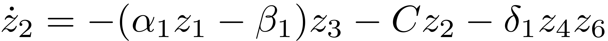</p><p>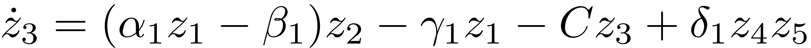</p><p>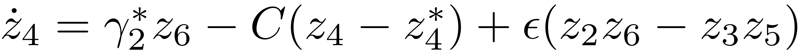</p><p>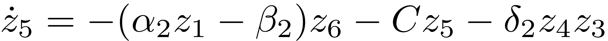</p><p>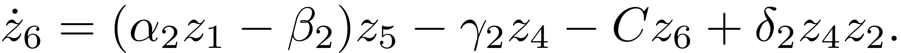</p><p>The model coefficients are given by</p><p></p><p>[1] Crommelin, Daan T., J. D. Opsteegh, and F. Verhulst. "A mechanism for atmospheric regime behavior." <i>Journal of the atmospheric sciences</i> 61.12 (2004): 1406-1419.</p><p>[2] Babaee, Hessam, et al. "Reduced-order description of transient instabilities and computation of finite-time Lyapunov exponents." <i>Chaos: An Interdisciplinary Journal of Nonlinear Science</i> 27.6 (2017): 063103.</p><h2 id="2">Continuation of fixed point</h2><p>We first calculate the fixed points of the system above. Later, we will take some of these fixed points as the anchor point for SSM reduction. Next we use parameter continuation to reproduce the right panel of Fig.1 of ref. [1].</p><pre class="codeinput">clear <span class="string">all</span>;
x0 = zeros(6,1);
p0 = 0;
prob = coco_prob();
prob = coco_set(prob, <span class="string">'cont'</span>, <span class="string">'PtMX'</span>, 200);
prob = ode_isol2ep(prob, <span class="string">''</span>, @CharneyDeVore, x0, <span class="string">'z1ast'</span>, p0);
prob = coco_add_pars(prob, <span class="string">'z1'</span>, 1, <span class="string">'z1'</span>, <span class="string">'active'</span>);
coco(prob, <span class="string">'cont-ep'</span>, [], 1, {<span class="string">'z1ast'</span> <span class="string">'z1'</span>}, [0,10]);
<span class="comment">% continuation path of fixed points</span>
figure;
thm = struct(<span class="string">'special'</span>, {{<span class="string">'SN'</span>,<span class="string">'HB'</span>}});
coco_plot_bd(thm,<span class="string">'cont-ep'</span>, <span class="string">'z1ast'</span>, <span class="string">'z1'</span>)
set(gca,<span class="string">'fontsize'</span>,14);
set(gca,<span class="string">'LineWidth'</span>,1.5);
xlabel(<span class="string">'$z_1^\ast$'</span>,<span class="string">'interpreter'</span>,<span class="string">'latex'</span>);
ylabel(<span class="string">'$z_1$'</span>,<span class="string">'interpreter'</span>,<span class="string">'latex'</span>);
</pre><pre class="codeoutput">
    STEP   DAMPING               NORMS              COMPUTATION TIMES
  IT SIT     GAMMA     ||d||     ||f||     ||U||   F(x)  DF(x)  SOLVE
   0                          0.00e+00  0.00e+00    0.0    0.0    0.0

 STEP      TIME        ||U||  LABEL  TYPE         z1ast           z1
    0  00:00:00   0.0000e+00      1  EP      0.0000e+00   0.0000e+00
   10  00:00:00   8.9041e-01      2          5.5741e-01   2.2152e-01
   20  00:00:00   5.6952e+00      3          3.8469e+00   6.8571e-01
   30  00:00:00   1.0599e+01      4          7.2697e+00   9.0663e-01
   40  00:00:00   1.2454e+01      5          8.5440e+00   1.0571e+00
   44  00:00:01   1.2471e+01      6  FP      8.5525e+00   1.0703e+00
   44  00:00:01   1.2471e+01      7  SN      8.5525e+00   1.0703e+00
   50  00:00:01   1.2427e+01      8          8.5125e+00   1.0998e+00
   60  00:00:01   1.1649e+01      9          7.9316e+00   1.1973e+00
   70  00:00:01   7.3756e+00     10          4.7336e+00   1.5913e+00
   80  00:00:01   5.8496e+00     11          3.2735e+00   2.2623e+00
   85  00:00:01   5.9428e+00     12  SN      3.2364e+00   2.4483e+00
   85  00:00:01   5.9428e+00     13  FP      3.2364e+00   2.4483e+00
   90  00:00:01   6.3028e+00     14          3.3176e+00   2.7772e+00
  100  00:00:01   1.0023e+01     15          4.9855e+00   4.8254e+00
  110  00:00:01   1.4997e+01     16          7.3917e+00   7.3052e+00
  112  00:00:01   1.5639e+01     17  HB      7.7043e+00   7.6226e+00
  120  00:00:01   1.9987e+01     18          9.8266e+00   9.7668e+00
  121  00:00:01   2.0342e+01     19  EP      1.0000e+01   9.9415e+00
</pre>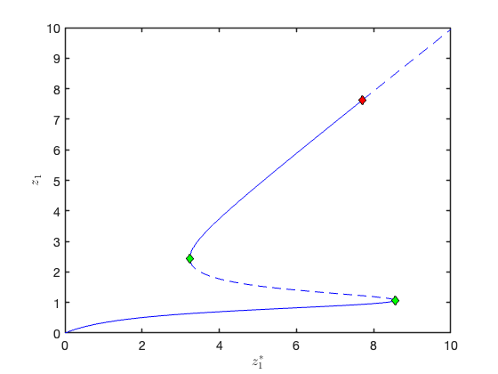 <p>As seen above, two saddle-node bifurcations and a Hopf bifurcation are detected along the manifold of fixed points. Therefore, all points on the middle unstable branch are rank-1 saddles, and the unstable fixed points after the Hopf bifurcation are rank-2 saddles.</p><h2 id="4">Shift origin to a rank-1 saddle and calcualte the SSM around the saddle</h2><pre class="codeinput"><span class="comment">% we take the solution with label 10 as the anchor point for SSM reduction.</span>
<span class="comment">% read solution</span>
lab = 10;
sol = ep_read_solution(<span class="string">''</span>, <span class="string">'cont-ep'</span>, lab);
<span class="comment">% build model with shifed origin</span>
[A,B,F] = build_model(sol);
<span class="comment">% setup dynamical system</span>
DS = <a href="../../../Library/DynamicalSystem/DynamicalSystem.html">DynamicalSystem</a>();
set(DS,<span class="string">'A'</span>,A,<span class="string">'B'</span>,B,<span class="string">'fnl'</span>,F);
set(DS.<a href="../../../Library/Features/Options/Options.html">Options</a>,<span class="string">'notation'</span>,<span class="string">'tensor'</span>)
<span class="comment">% spectrum analysis</span>
[V,D,W] = DS.<a href="../../../Library/DynamicalSystem/linear_spectral_analysis.html">linear_spectral_analysis</a>();
<span class="comment">% construct SSM</span>
S = SSM(DS);
set(S.<a href="../../../Library/Features/Options/Options.html">Options</a>,<span class="string">'paramStyle'</span>,<span class="string">'graph'</span>,<span class="string">'reltol'</span>,1)
set(S.<a href="../../../Library/Features/Options/Options.html">Options</a>,<span class="string">'notation'</span>,<span class="string">'tensor'</span>);
masterModes = 1;                        <span class="comment">% master mode</span>
order = 9;                              <span class="comment">% SSM expansion order</span>
S.<a href="../../../Library/Manifold/choose_E.html">choose_E</a>(masterModes);
[W0,R0] = S.<a href="../../../Library/Manifold/compute_whisker.html">compute_whisker</a>(order);     <span class="comment">% compute of SSM</span>
</pre><pre class="codeoutput">
 The first 6 nonzero eigenvalues are given as 
   0.1948 + 0.0000i
  -0.0988 + 3.0348i
  -0.0988 - 3.0348i
  -0.1012 + 0.0000i
  -0.2480 + 0.1576i
  -0.2480 - 0.1576i

sigma_out = -1
sigma_in = -1
Computing autonomous whisker at order 2
0 (near) inner resonance(s) detected at order 2
Manifold computation time at order 2 = 00:00:00
Estimated memory usage at order  2 = 5.74E-03 MB
Computing autonomous whisker at order 3
0 (near) inner resonance(s) detected at order 3
Manifold computation time at order 3 = 00:00:00
Estimated memory usage at order  3 = 8.43E-03 MB
Computing autonomous whisker at order 4
0 (near) inner resonance(s) detected at order 4
Manifold computation time at order 4 = 00:00:00
Estimated memory usage at order  4 = 9.98E-03 MB
Computing autonomous whisker at order 5
0 (near) inner resonance(s) detected at order 5
Manifold computation time at order 5 = 00:00:00
Estimated memory usage at order  5 = 1.16E-02 MB
Computing autonomous whisker at order 6
0 (near) inner resonance(s) detected at order 6
Manifold computation time at order 6 = 00:00:00
Estimated memory usage at order  6 = 1.33E-02 MB
Computing autonomous whisker at order 7
0 (near) inner resonance(s) detected at order 7
Manifold computation time at order 7 = 00:00:00
Estimated memory usage at order  7 = 1.51E-02 MB
Computing autonomous whisker at order 8
0 (near) inner resonance(s) detected at order 8
Manifold computation time at order 8 = 00:00:00
Estimated memory usage at order  8 = 1.69E-02 MB
Computing autonomous whisker at order 9
0 (near) inner resonance(s) detected at order 9
Manifold computation time at order 9 = 00:00:00
Estimated memory usage at order  9 = 1.89E-02 MB
</pre><p>As seen above, no inner resonances are detected in the computation of SSM. So the reduced dynamics is linear: 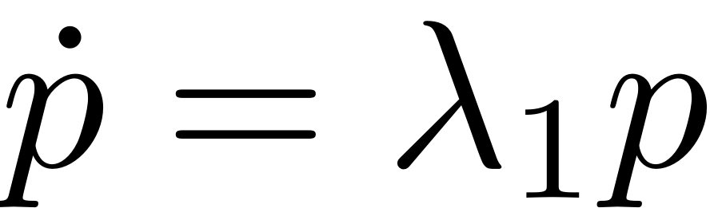.</p><pre class="codeinput">lamdMaster = D(masterModes,masterModes);
tf = 52;
t  = linspace(0,tf,200);
p1 = 1e-4*exp(lamdMaster*t);
<span class="comment">% mapping to full system</span>
z1 = <a href="../../../Library/Features/misc/reduced_to_full_traj.html">reduced_to_full_traj</a>(t,p1,W0);
<span class="comment">% repeat the above for a different initial condition</span>
p2 = -1e-4*exp(lamdMaster*t);
z2 = <a href="../../../Library/Features/misc/reduced_to_full_traj.html">reduced_to_full_traj</a>(t,p2,W0);
z  = [z2(:,end:-1:1) z1];
<span class="comment">% plot SSM</span>
figure;
plot3(z(1,:),z(2,:),z(3,:),<span class="string">'b-'</span>,<span class="string">'LineWidth'</span>,1.5); grid <span class="string">on</span>
xlabel(<span class="string">'x'</span>); ylabel(<span class="string">'y'</span>); zlabel(<span class="string">'z'</span>);
set(gca,<span class="string">'fontsize'</span>,16);
set(gca,<span class="string">'LineWidth'</span>,1.5);
box <span class="string">on</span>; view([-55,38])
axis <span class="string">tight</span>

<span class="comment">% forward simulation of the original system</span>
zinit_plus = V(:,1)*1e-4;
zinit_minu = -zinit_plus;
odefunc = @(t,z) DS.<a href="../../../Library/DynamicalSystem/odefun.html">odefun</a>(t,z);
[tplus,zplus] = ode45(odefunc,0:1:tf,zinit_plus);
[tminu,zminu] = ode45(odefunc,0:1:tf,zinit_minu);
zfull = [zminu(end:-1:1,:);zplus];
<span class="comment">% plot simulated orbits</span>
hold <span class="string">on</span>
plot3(zfull(:,1),zfull(:,2),zfull(:,3),<span class="string">'ro'</span>,<span class="string">'LineWidth'</span>,1.5);
legend(<span class="string">'SSM'</span>,<span class="string">'Full'</span>)
</pre>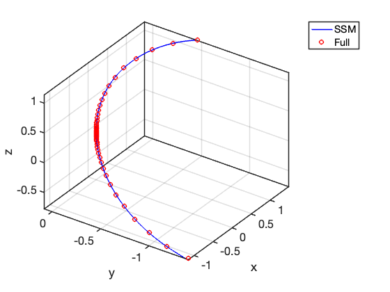 <h2 id="6">Shift origin to a rank-2 saddle and calcualte the SSM around the saddle</h2><pre class="codeinput"><span class="comment">% we take the solution with label 19 as the anchor point for SSM reduction.</span>
<span class="comment">% read solution</span>
clear <span class="string">all</span>;
lab = 19;
sol = ep_read_solution(<span class="string">''</span>, <span class="string">'cont-ep'</span>, lab);
[A,B,F] = build_model(sol);
DS = <a href="../../../Library/DynamicalSystem/DynamicalSystem.html">DynamicalSystem</a>();
set(DS,<span class="string">'A'</span>,A,<span class="string">'B'</span>,B,<span class="string">'fnl'</span>,F);
set(DS.<a href="../../../Library/Features/Options/Options.html">Options</a>,<span class="string">'notation'</span>,<span class="string">'multiindex'</span>)

<span class="comment">%Linear Modal analysis and SSM computation</span>
[V,D,W] = DS.<a href="../../../Library/DynamicalSystem/linear_spectral_analysis.html">linear_spectral_analysis</a>();
<span class="comment">% the eigenvalues above should be consistent with the ons in sol.ep_test.la</span>

<span class="comment">% now we compute the 2D SSM</span>
S = SSM(DS);
set(S.<a href="../../../Library/Features/Options/Options.html">Options</a>, <span class="string">'reltol'</span>, 1.0,<span class="string">'notation'</span>,<span class="string">'multiindex'</span>);
resonant_modes = [1 2]; <span class="comment">% choose master spectral subspace</span>
order = 11;                  <span class="comment">% SSM expansion order</span>
S.<a href="../../../Library/Manifold/choose_E.html">choose_E</a>(resonant_modes)
[W0,R0] = S.<a href="../../../Library/Manifold/compute_whisker.html">compute_whisker</a>(order);
</pre><pre class="codeoutput">
 The first 6 nonzero eigenvalues are given as 
   0.6480 + 4.7288i
   0.6480 - 4.7288i
  -0.0982 + 0.0000i
  -0.1001 + 0.0000i
  -0.8488 + 4.7248i
  -0.8488 - 4.7248i

sigma_out = -1
sigma_in = -1
Manifold computation time at order 2 = 00:00:00
Estimated memory usage at order  2 = 1.26E-02 MB
Manifold computation time at order 3 = 00:00:00
Estimated memory usage at order  3 = 1.43E-02 MB
Manifold computation time at order 4 = 00:00:00
Estimated memory usage at order  4 = 1.81E-02 MB
Manifold computation time at order 5 = 00:00:00
Estimated memory usage at order  5 = 2.17E-02 MB
Manifold computation time at order 6 = 00:00:00
Estimated memory usage at order  6 = 2.79E-02 MB
Manifold computation time at order 7 = 00:00:00
Estimated memory usage at order  7 = 3.41E-02 MB
Manifold computation time at order 8 = 00:00:00
Estimated memory usage at order  8 = 4.36E-02 MB
Manifold computation time at order 9 = 00:00:00
Estimated memory usage at order  9 = 5.30E-02 MB
Manifold computation time at order 10 = 00:00:00
Estimated memory usage at order  10 = 6.65E-02 MB
Manifold computation time at order 11 = 00:00:00
Estimated memory usage at order  11 = 8.00E-02 MB
</pre><p>Reduced dynamics in symbolic form</p><pre class="codeinput">lamdMaster = DS.spectrum.Lambda(resonant_modes);
options = struct();
options.isauto = true;
options.isdamped = true;
options.numDigits = 4;
disp(<span class="string">'Reduced dynamics on the 2D unstable SSM:'</span>)
y = <a href="../../../Library/Features/misc/reduced_dynamics_symbolic.html">reduced_dynamics_symbolic</a>(lamdMaster,R0,options)
</pre><pre class="codeoutput">Reduced dynamics on the 2D unstable SSM:
 
y =
 
- 0.4963*rho_1^7 - 0.4259*rho_1^5 - 0.6239*rho_1^3 + 0.648*rho_1
0.001089*rho_1^6 + 0.0006939*rho_1^4 + 0.0006916*rho_1^2 + 4.729
 
</pre> <p>Visualization of the 2D unstable SSM</p><pre class="codeinput">rhosamp = [0 0.05 0.08:0.01:0.7];
plotdofs = [2 6 4];
<a href="../../../Library/Features/misc/plot_2D_auto_SSM.html">plot_2D_auto_SSM</a>(W0,rhosamp,plotdofs,{<span class="string">'$z_2$'</span>,<span class="string">'$z_6$'</span>,<span class="string">'$z_4$'</span>});
view([-70 7])
figssm = gcf;
</pre> 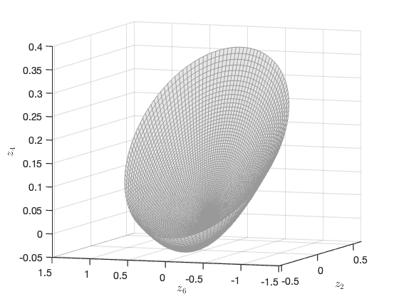 <p>validation of SSM prediction</p><pre class="codeinput"><span class="comment">% plot transient trajectories on the SSM</span>
tf = 7;
nsteps = 1000;
q0 = 0.01*exp(1i*0.5);
q0 = [q0;conj(q0)];
z0 = <a href="../../../Library/Features/misc/reduced_to_full_traj.html">reduced_to_full_traj</a>(0,q0,W0);
traj = <a href="../../../Library/Features/misc/transient_traj_on_auto_ssm.html">transient_traj_on_auto_ssm</a>(DS, resonant_modes, W0, R0, tf, nsteps, 1:6, [], q0);

<span class="comment">% Reference solution from forward simulation</span>
options = odeset(<span class="string">'RelTol'</span>,1e-8,<span class="string">'AbsTol'</span>,1e-10);
odefun  = @(t,z) DS.<a href="../../../Library/DynamicalSystem/odefun.html">odefun</a>(t,z);
[tInt1, zInt1] = ode15s(odefun, [0 tf], z0(1:6),options);

figure;
plot(traj.time,traj.phy(:,1),<span class="string">'r-'</span>,<span class="string">'LineWidth'</span>,1.5); hold <span class="string">on</span>
plot(tInt1,zInt1(:,1),<span class="string">'b--'</span>,<span class="string">'LineWidth'</span>,1.5);
legend(<span class="string">'SSM-prediction'</span>,<span class="string">'Full system'</span>)
xlabel(<span class="string">'$t$'</span>,<span class="string">'Interpreter'</span>,<span class="string">"latex"</span>,<span class="string">'FontSize'</span>,14);
ylabel(<span class="string">'$z_1$'</span>,<span class="string">'Interpreter'</span>,<span class="string">"latex"</span>,<span class="string">'FontSize'</span>,14);

figure(figssm); hold <span class="string">on</span>
hold <span class="string">on</span>
plot3(traj.phy(:,plotdofs(1)),traj.phy(:,plotdofs(2)),traj.phy(:,plotdofs(3)),<span class="string">'r-'</span>,<span class="string">'LineWidth'</span>,1.5);
plot3(zInt1(:,plotdofs(1)),zInt1(:,plotdofs(2)),zInt1(:,plotdofs(3)),<span class="string">'b--'</span>,<span class="string">'LineWidth'</span>,1.5);
legend(<span class="string">'SSM-$\mathcal{O}(11)$'</span>,<span class="string">'Reduced'</span>,<span class="string">'Full'</span>,<span class="string">'interpreter'</span>,<span class="string">'latex'</span>);
legend <span class="string">boxoff</span>
</pre> 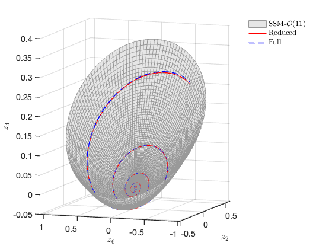 <p class="footer"><br/><a href="https://www.mathworks.com/products/matlab/">Published with MATLAB® R2023a</a><br/></p></div><!--
##### SOURCE BEGIN #####
%% Charney-DeVore Model
%
%%
% Consider Charney–DeVore model [1,2]
% 
% $$\dot{z}_1=\gamma_1^\ast z_3-C(z_1-z_1^\ast)$$
% 
% $$\dot{z}_2=-(\alpha_1z_1-\beta_1)z_3-Cz_2-\delta_1z_4z_6$$
% 
% $$\dot{z}_3=(\alpha_1z_1-\beta_1)z_2-\gamma_1z_1-Cz_3+\delta_1z_4z_5$$
% 
% $$\dot{z}_4=\gamma_2^\ast z_6-C(z_4-z_4^\ast)+\epsilon(z_2z_6-z_3z_5)$$
% 
% $$\dot{z}_5=-(\alpha_2z_1-\beta_2)z_6-Cz_5-\delta_2z_4z_3$$
% 
% $$\dot{z}_6=(\alpha_2z_1-\beta_2)z_5-\gamma_2z_4-Cz_6+\delta_2z_4z_2.$$
% 
% The model coefficients are given by
% 
% $$\alpha_m=\frac{8\sqrt{2}}{\pi}\frac{m^2}{4m^2-1}\frac{b^2+m^2-1}{b^2+m^2},\quad 
% \beta_m=\frac{\beta b^2}{b^2+m^2},\\\delta_m=\frac{64\sqrt{2}}{15\pi}\frac{b^2-m^2+1}{b^2+m^2},\quad 
% \gamma_m^\ast = \gamma \frac{4m}{4m^2-1}\frac{\sqrt{2}b}{\pi},\\\epsilon=\frac{16\sqrt{2}}{5\pi},\gamma_m=\gamma\frac{4m^3}{4m^2-1}\frac{\sqrt{2}b}{\pi(b^2+m^2)}.$$
% 
% [1] Crommelin, Daan T., J. D. Opsteegh, and F. Verhulst. "A mechanism for 
% atmospheric regime behavior." _Journal of the atmospheric sciences_ 61.12 (2004): 
% 1406-1419.
% 
% [2] Babaee, Hessam, et al. "Reduced-order description of transient instabilities 
% and computation of finite-time Lyapunov exponents." _Chaos: An Interdisciplinary 
% Journal of Nonlinear Science_ 27.6 (2017): 063103.
%% Continuation of fixed point
% We first calculate the fixed points of the system above. Later, we will take 
% some of these fixed points as the anchor point for SSM reduction. Next we use 
% parameter continuation to reproduce the right panel of Fig.1 of ref. [1].

clear all;
x0 = zeros(6,1);
p0 = 0;
prob = coco_prob();
prob = coco_set(prob, 'cont', 'PtMX', 200);
prob = ode_isol2ep(prob, '', @CharneyDeVore, x0, 'z1ast', p0);
prob = coco_add_pars(prob, 'z1', 1, 'z1', 'active');
coco(prob, 'cont-ep', [], 1, {'z1ast' 'z1'}, [0,10]);
% continuation path of fixed points
figure;
thm = struct('special', {{'SN','HB'}});
coco_plot_bd(thm,'cont-ep', 'z1ast', 'z1')
set(gca,'fontsize',14);
set(gca,'LineWidth',1.5);
xlabel('$z_1^\ast$','interpreter','latex');
ylabel('$z_1$','interpreter','latex');
%% 
% As seen above, two saddle-node bifurcations and a Hopf bifurcation are detected 
% along the manifold of fixed points. Therefore, all points on the middle unstable 
% branch are rank-1 saddles, and the unstable fixed points after the Hopf bifurcation 
% are rank-2 saddles. 
%% Shift origin to a rank-1 saddle and calcualte the SSM around the saddle

% we take the solution with label 10 as the anchor point for SSM reduction.
% read solution
lab = 10;
sol = ep_read_solution('', 'cont-ep', lab);
% build model with shifed origin
[A,B,F] = build_model(sol);
% setup dynamical system
DS = <a href="../../../Library/DynamicalSystem/DynamicalSystem.html">DynamicalSystem</a>();
set(DS,'A',A,'B',B,'fnl',F); 
set(DS.<a href="../../../Library/Features/Options/Options.html">Options</a>,'notation','tensor')
% spectrum analysis
[V,D,W] = DS.<a href="../../../Library/DynamicalSystem/linear_spectral_analysis.html">linear_spectral_analysis</a>();
% construct SSM
S = SSM(DS);
set(S.<a href="../../../Library/Features/Options/Options.html">Options</a>,'paramStyle','graph','reltol',1)
set(S.<a href="../../../Library/Features/Options/Options.html">Options</a>,'notation','tensor');
masterModes = 1;                        % master mode
order = 9;                              % SSM expansion order
S.<a href="../../../Library/Manifold/choose_E.html">choose_E</a>(masterModes);
[W0,R0] = S.<a href="../../../Library/Manifold/compute_whisker.html">compute_whisker</a>(order);     % compute of SSM
%% 
% As seen above, no inner resonances are detected in the computation of SSM. 
% So the reduced dynamics is linear: $\dot{p}=\lambda_1p$.

lamdMaster = D(masterModes,masterModes);
tf = 52;
t  = linspace(0,tf,200);
p1 = 1e-4*exp(lamdMaster*t); 
% mapping to full system
z1 = <a href="../../../Library/Features/misc/reduced_to_full_traj.html">reduced_to_full_traj</a>(t,p1,W0);
% repeat the above for a different initial condition
p2 = -1e-4*exp(lamdMaster*t);
z2 = <a href="../../../Library/Features/misc/reduced_to_full_traj.html">reduced_to_full_traj</a>(t,p2,W0);
z  = [z2(:,end:-1:1) z1];
% plot SSM
figure;
plot3(z(1,:),z(2,:),z(3,:),'b-','LineWidth',1.5); grid on
xlabel('x'); ylabel('y'); zlabel('z');
set(gca,'fontsize',16);
set(gca,'LineWidth',1.5);
box on; view([-55,38])
axis tight

% forward simulation of the original system
zinit_plus = V(:,1)*1e-4;
zinit_minu = -zinit_plus;
odefunc = @(t,z) DS.<a href="../../../Library/DynamicalSystem/odefun.html">odefun</a>(t,z);
[tplus,zplus] = ode45(odefunc,0:1:tf,zinit_plus);
[tminu,zminu] = ode45(odefunc,0:1:tf,zinit_minu);
zfull = [zminu(end:-1:1,:);zplus];
% plot simulated orbits
hold on
plot3(zfull(:,1),zfull(:,2),zfull(:,3),'ro','LineWidth',1.5);
legend('SSM','Full')
%% Shift origin to a rank-2 saddle and calcualte the SSM around the saddle

% we take the solution with label 19 as the anchor point for SSM reduction.
% read solution
clear all;
lab = 19;
sol = ep_read_solution('', 'cont-ep', lab);
[A,B,F] = build_model(sol);
DS = <a href="../../../Library/DynamicalSystem/DynamicalSystem.html">DynamicalSystem</a>();
set(DS,'A',A,'B',B,'fnl',F); 
set(DS.<a href="../../../Library/Features/Options/Options.html">Options</a>,'notation','multiindex')

%Linear Modal analysis and SSM computation
[V,D,W] = DS.<a href="../../../Library/DynamicalSystem/linear_spectral_analysis.html">linear_spectral_analysis</a>();
% the eigenvalues above should be consistent with the ons in sol.ep_test.la
 
% now we compute the 2D SSM
S = SSM(DS);
set(S.<a href="../../../Library/Features/Options/Options.html">Options</a>, 'reltol', 1.0,'notation','multiindex');
resonant_modes = [1 2]; % choose master spectral subspace
order = 11;                  % SSM expansion order
S.<a href="../../../Library/Manifold/choose_E.html">choose_E</a>(resonant_modes)
[W0,R0] = S.<a href="../../../Library/Manifold/compute_whisker.html">compute_whisker</a>(order);
%% 
% Reduced dynamics in symbolic form

lamdMaster = DS.spectrum.Lambda(resonant_modes);
options = struct();
options.isauto = true; 
options.isdamped = true;
options.numDigits = 4;
disp('Reduced dynamics on the 2D unstable SSM:')
y = <a href="../../../Library/Features/misc/reduced_dynamics_symbolic.html">reduced_dynamics_symbolic</a>(lamdMaster,R0,options)
%% 
% Visualization of the 2D unstable SSM

rhosamp = [0 0.05 0.08:0.01:0.7];
plotdofs = [2 6 4]; 
<a href="../../../Library/Features/misc/plot_2D_auto_SSM.html">plot_2D_auto_SSM</a>(W0,rhosamp,plotdofs,{'$z_2$','$z_6$','$z_4$'});
view([-70 7])
figssm = gcf;
%% 
% validation of SSM prediction

% plot transient trajectories on the SSM
tf = 7;
nsteps = 1000;
q0 = 0.01*exp(1i*0.5);
q0 = [q0;conj(q0)];
z0 = <a href="../../../Library/Features/misc/reduced_to_full_traj.html">reduced_to_full_traj</a>(0,q0,W0);
traj = <a href="../../../Library/Features/misc/transient_traj_on_auto_ssm.html">transient_traj_on_auto_ssm</a>(DS, resonant_modes, W0, R0, tf, nsteps, 1:6, [], q0);

% Reference solution from forward simulation
options = odeset('RelTol',1e-8,'AbsTol',1e-10);
odefun  = @(t,z) DS.<a href="../../../Library/DynamicalSystem/odefun.html">odefun</a>(t,z);
[tInt1, zInt1] = ode15s(odefun, [0 tf], z0(1:6),options); 

figure;
plot(traj.time,traj.phy(:,1),'r-','LineWidth',1.5); hold on
plot(tInt1,zInt1(:,1),'bREPLACE_WITH_DASH_DASH','LineWidth',1.5);
legend('SSM-prediction','Full system')
xlabel('$t$','Interpreter',"latex",'FontSize',14);
ylabel('$z_1$','Interpreter',"latex",'FontSize',14);

figure(figssm); hold on
hold on
plot3(traj.phy(:,plotdofs(1)),traj.phy(:,plotdofs(2)),traj.phy(:,plotdofs(3)),'r-','LineWidth',1.5);
plot3(zInt1(:,plotdofs(1)),zInt1(:,plotdofs(2)),zInt1(:,plotdofs(3)),'bREPLACE_WITH_DASH_DASH','LineWidth',1.5);
legend('SSM-$\mathcal{O}(11)$','Reduced','Full','interpreter','latex');
legend boxoff
##### SOURCE END #####
--></body></html>